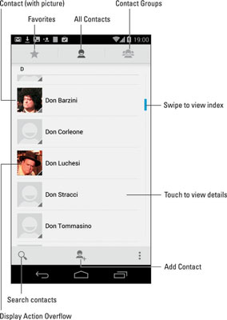
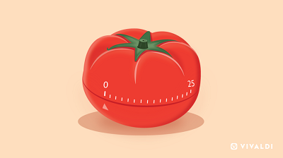
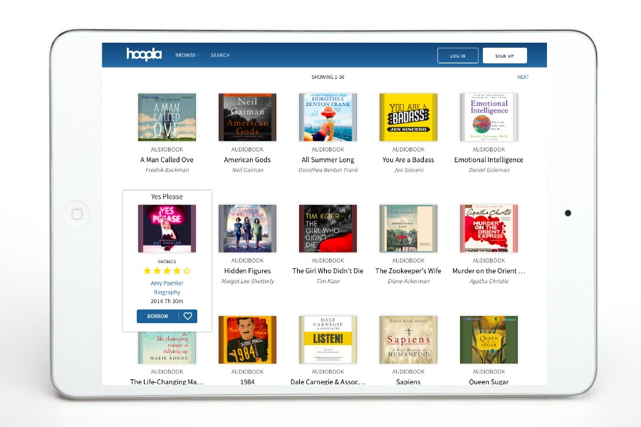
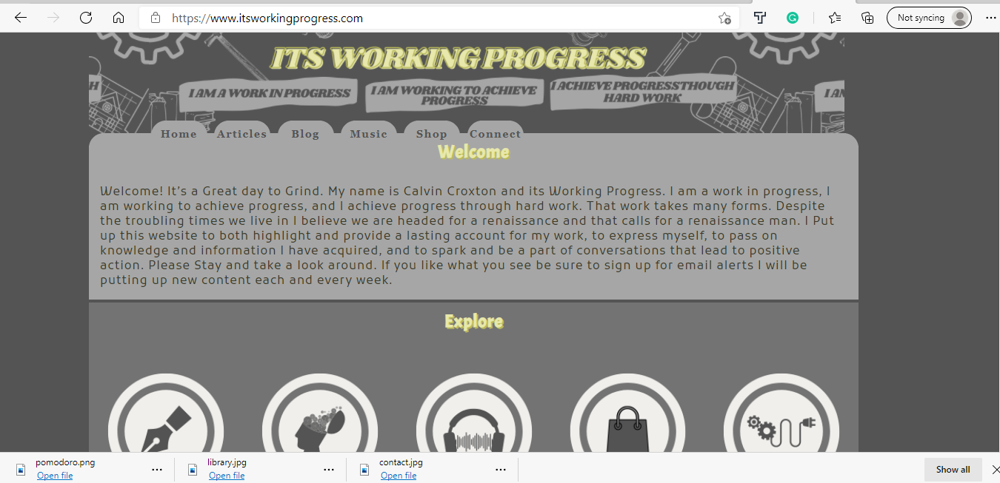

Projects
Dom Contact List
Description: Takes an array of contacts and displays a card for each one. Allows for Contacts to be filtered by city. Allows for the deletion of contact using the delete button. My approach to this project was to think about the document object model and how to find and access the right data from each element. This project would be a good use for any software that has contacts or friends that users can view and edit. The end users would be every day people. One thing i learned from this project is how to target an element on the screen and then find its parent element.
Completed using Javascript and the Document Object Model.
Link to Project Link to live appPomodoro Timer
Description: A Timer for work intervals. Allows you to set a focus time and a break time. When the focus period ends a sound plays and the break timer starts. When the break is over a sound plays and a new focus session begins. My approach to this project was to break the functionality down into components and focus on one at a time.This project can be used by programmers to help them with focusing during coding projects. Working on this project I learned how to work with states and pass the information into child components.
Completed using Javascript, React, and state management techniques.
Link to Project Link to live appLocal library
Description: A project that has several functions working with a dataset of books and authors. Makes use of the different array functions including .map, .filter, .find, and .reduce. This project would be very useful as a foundation for an e-commerce website. Functions allow the user to find books by author or id, find the most popular books and filter by return status among other things. My approach to this project was to study the datasets provided to understand how the arrays were structured and which array method would be the most effective for each function. I learned that Using the Array methods is much better than using for loops when working with an array.
Completed using Javascript.
Link to Project Link to live appIts Working Progress
Description: My personal website. Developed using skills taught in this module and practiced during the pre-course work. My approach to this project was to first write the content using HTMl and then style it using CSS. This website is intended to be viewed by those with an interest in learning and development. Working on this project i learned how to use flex box to organize my content on the screen. I look forward to upgrading the website as my abilities increase.
Completed using Html and CSS.
Link to Website Link to live app